What Is Redstone? How Does It Work?
Redstone is an ore you will find down at the bottom of the mines. When mined you will get redstone dust, which is what you will need to make redstone. Think of redstone like electricity. Redstone power comes from a power source, and can be transmitted to devices which will then do something in response. You can use redstone to create anything from simple traps, doors, logic gates, automated farms, item sorting systems, puzzles/games, and fully functional computing systems. Here's a video on how to work redstone because I don't know how to! It is a quick video so heres a link to a 25 minute long videoon redstone by ibxtoycat
Redstone Items
- 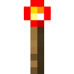Redstone Torch
- 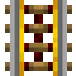Powered Rail
- 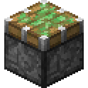Sticky Piston
- 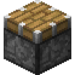Piston
- Dispenser
- 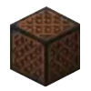Note Block
- 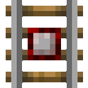Detector Rail
- 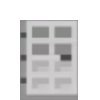Iron Door
- 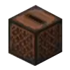Jukebox
- 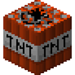TNT
- 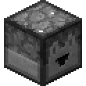Dropper
- 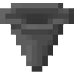Hopper
- 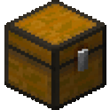Trapped Chest
- 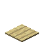Pressure Plates
- 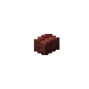Buttons
- 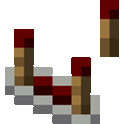Redstone Comparator
- 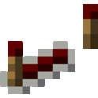Redstone Repeater
Tips
- Decide on the purpose of what your redstone is going to
- Efficient design
- Understand how signals will be transmitted from controls to mechanisms
- Avoid overcomplicating your build with too much space or materials, make it small as possible while still functioning
- Use redstone dust to create redstone circuits, learn the strength of redstone signals and how they weaken with distance.